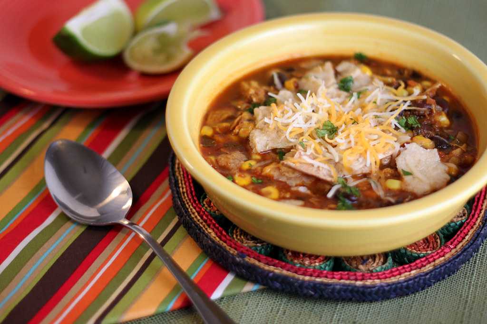

Chicken Tortilla Soup

Description
Chicken Tortilla Soup is a comforting Mexican soup that combines a rich, thick chicken broth with toasted tortillas, chiles, and a variety of bold flavors. The soup is traditionally served with shredded chicken, sour cream, avocado, and fried tortilla strips for added crunch. It's perfect for cold days or whenever you need a comforting meal.
Ingredients
- 12 ozs. raw chicken breast
- 3 cups chicken broth (reserved from cooked chicken)
- 2 lbs. Roma (plum) tomatoes
- 1 medium onion (halved)
- 3 garlic cloves
- 1 morita chile (or 1 chipotle chile in adobo)
- 2 small avocados or 1 large ripe but firm avocado
- 4 ozs. sour cream or crema
- 8 corn tortillas for making tortilla strips (or 3 cups pre-made tortilla strips)
- 4 cups water
- 1 tsp. salt (and more to taste)
- 2 tablespoons oil
Steps
- Cook the Chicken and Broth
- Prepare the Tomato Broth
- Fry the Tortillas
- Assemble the Soup
- Serve
Reference
Chef John. (n.d.). Chef John's Chicken Tortilla Soup. Allrecipes. Retrieved January 5, 2025, from
Chef John’s Chicken Tortilla Soup
Home